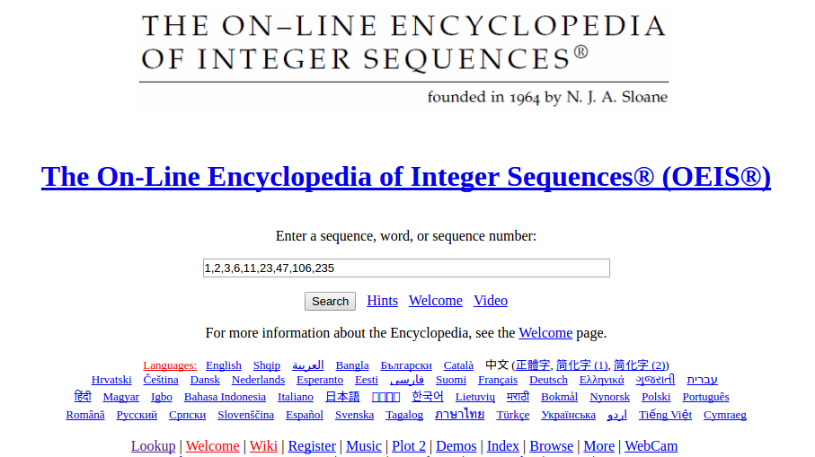

Integer sequences
An integer is a whole number.
An integer sequence is a sequence of whole numbers.
1, 2, 3, 4, 5, 6, 7, …
The natural numbers
1, 3, 5, 7, 9, …
The odd numbers
2, 3, 5, 7, 11, 13, 17, …
The prime numbers
1, 1, 2, 3, 5, 8, 13, 21, …
The Fibonacci sequence
3, 1, 4, 1, 5, 9, 2, …
The digits of π
Notation
- A number at a particular position in a sequence is called a term.
- We'll call the \(n\)th term of a sequence \(\operatorname{a}(n)\).
The odd numbers
| \(n\) |
0 |
1 |
2 |
3 |
4 |
5 |
| \( \operatorname{a}(n) \) |
1 |
3 |
5 |
7 |
9 |
11 |
\(\operatorname{a}(n) = \) \(2n+1\)
\( \operatorname{a}(52) = \) \(105\)
The Fibonacci sequence
| \(n\) |
0 |
1 |
2 |
3 |
4 |
5 |
| \( \operatorname{a}(n) \) |
1 |
1 |
2 |
3 |
5 |
8 |
\(\operatorname{a}(n) = \) \( \operatorname{a}(n-2)+\operatorname{a}(n-1) \)
\( \operatorname{a}(8) = \) \( 34 \)
The prime numbers
| \(n\) |
1 |
2 |
3 |
4 |
5 |
| \( \operatorname{a}(n) \) |
2 |
3 |
5 |
7 |
11 |
\(\operatorname{a}(n) = \) ????
\( \operatorname{a}(1,\! 000,\! 000) = \) \( 15,\! 485,\! 863 \)
Why study integer sequences?

Review some sequences
Judge sequences on:
- Aesthetics
- Completeness
- Explicability
- Novelty
Make up your own sequences
- A sequence from the real world.
- A sequence generated by applying an operation to the last number.
- The numbers with a certain property.
Investigate some sequences
Favourite sequences
Golomb's sequence
1, 2, 2, 3, 3, 4, 4, 4, 5, 5, 5, 6, 6, 6, 6, 7, 7, 7, 7, 8, 8, 8, 8, 9, 9, 9, 9, 9, 10, 10, 10, 10, 10, …
\(n\) appears \(\operatorname{a}(n)\) times in this sequence - it describes itself!
\(3435 \) \( = 3^3+4^4+3^3+5^5 \)
Take each digit of \(n\) to the power of itself.
The numbers for which this operation gives you back the same number are the Münchhausen numbers.
There are only four Münchhausen numbers.
Finally...